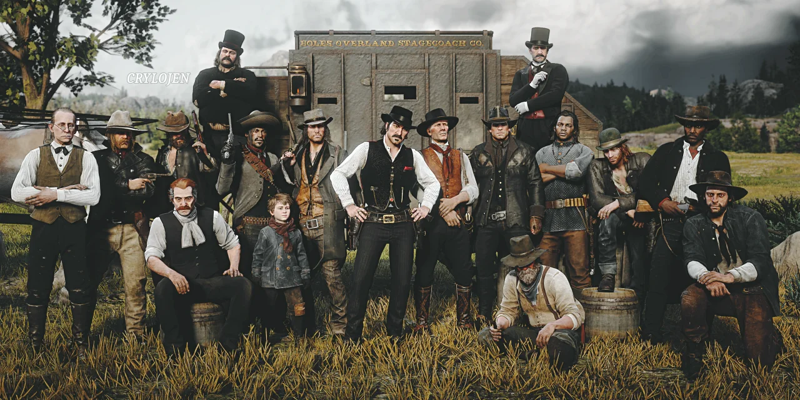
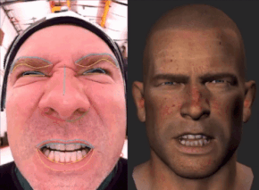

O roteiro de RDR2 levou anos para ser escrito. A história se passa em 1899, 12 anos antes dos eventos do primeiro jogo, e acompanha Arthur Morgan, um fora-da-lei veterano da gangue Van der Linde. Ao contrário do protagonista do primeiro jogo, John Marston, Arthur é mais introspectivo e complexo. Ele é um homem que começa a questionar suas ações e o rumo de sua vida. O foco dos roteiristas era construir uma narrativa emocional, com personagens que evoluíssem ao longo do tempo. A história foi escrita para se adaptar ao comportamento do jogador, especialmente em relação ao sistema de honra, que altera o desfecho de várias cenas e até o final do jogo.

Para alcançar um nível de realismo nunca visto antes, a Rockstar utilizou extensivas sessões de captura de movimento com os atores. Roger Clark, intérprete de , Arthur Morgan, gravou mais de 1.200 horas de motion capture. Ao todo, foram mais de 700 atores envolvidos nas gravações. As expressões faciais, os gestos e as interações físicas entre os personagens foram capturados com equipamentos de ponta, o que permitiu performances convincentes e emocionantes. Os atores também participaram ativamente do desenvolvimento dos personagens, contribuindo com ideias para os diálogos e para a forma de agir de seus papéis.
